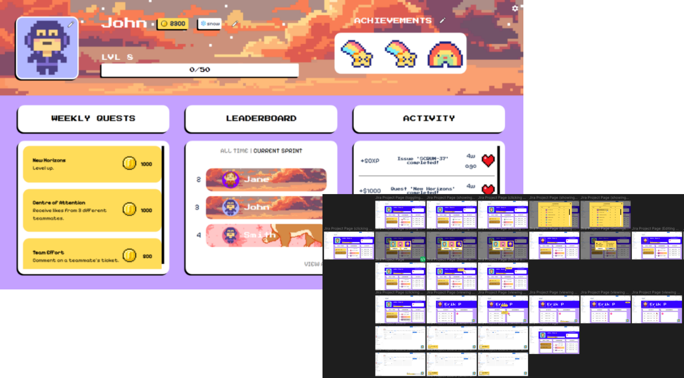
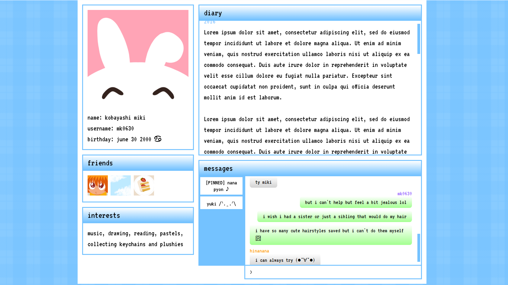
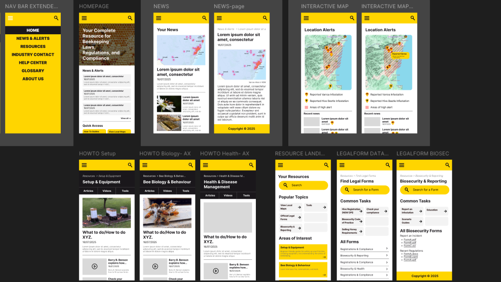
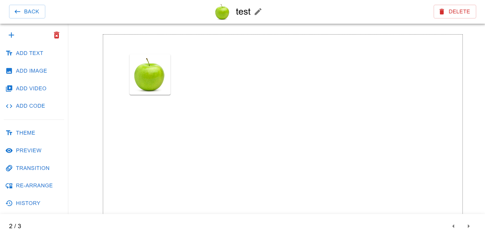
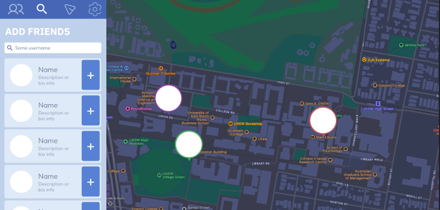
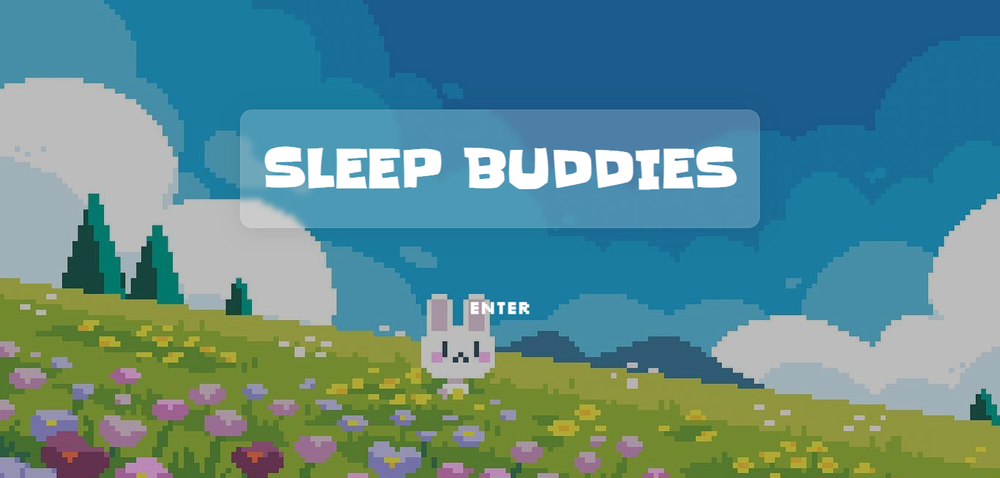

Atlassian Forge: JiraQuest
A custom Atlassian Forge app that gamifies Jira. Users can level up, collect coins, and customise their profile based on activity, transforming routine task management into a more engaging experience.
read more →
Y2K-Style Character Wiki
A character wiki designed as a faux early-2000s social media platform. Instead of a traditional encyclopedia layout, character information is distributed across profiles, logs, and posts, encouraging exploration.
read more →
Bee-Legal
A high-fidelity mobile app prototype designed for beekeepers of all experience levels. The app provides access to beekeeping news, interactive maps, educational articles, videos, and resources.
read more →
Cybersecurity Escape Room
An educational website that introduces cybersecurity concepts using escape room-inspired interactions. Content is presented through challenges and feedback-driven UI elements, encouraging active learning rather than passive reading. Play here.
read more →
Presentation Builder
An interactive web-based tool that allows users to create presentation slides with custom text and images directly in the browser.
read more →
Find Your Friends
A web app designed to help students locate friends around campus and share real-time status updates, encouraging connection.
read more →
Sleep Buddies
A gamified wellness app that motivates consistent sleep by rewarding timely sleep habits with virtual pets and providing consequences if routines are missed.
read more →